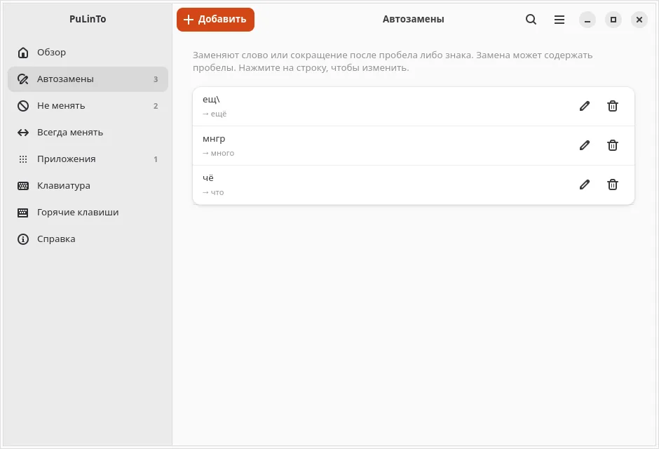
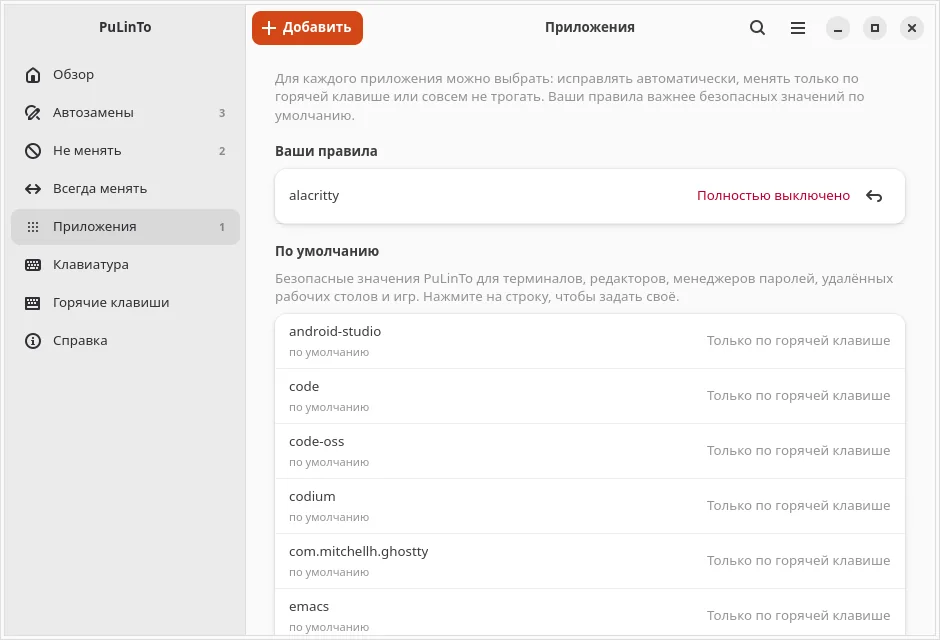

THE MAGIC OF NEVER THINKING ABOUT LAYOUTS
Instant habit, impossible to give up
Words are corrected on the fly as you type, and the next word begins in the right layout. Fast. Private. Written from scratch. Free and open source.
curl -fsSL {{SITE}}/install.sh | bash
One command or package installer (.deb, .rpm). Works on X11 and GNOME on Wayland. If a word is missed, a single tap fixes it: Alt (Apple) or Pause/Break (PC).
A carefully calibrated decision cascade
One of the most accurate layout engines on the market.
Found an accuracy gap?
Send it to us for correction so PuLinTo gets even better for everyone.
| Program | Accuracy | False Positives | Misses |
|---|---|---|---|
| PuLinTo | 99.38% | 0.06% | 2.13% |
False positive: a correctly typed word mistakenly altered. Full methodology in «Measurements and Methodology».
Four checks — first match decides
- Stop rulesPasswords, URLs, code and mixed-script tokens are never touched.
- Short 1–2 letter wordsOnly if context agrees: neighboring words' language is taken into account.
- Frequency dictionaryIf both interpretations are real words, frequency wins with a strict 4x margin.
- Forbidden n-gramsDecides only if it clearly separates interpretations; otherwise the word remains as is.
Zero typing logs. Period.
Your keystrokes stay strictly yours.
- The daemon stores neither typed nor corrected text. Logs contain only operation type, word length, and decision stage.
- Diagnostic reports with the last 8 decisions are written only if you explicitly press Ctrl+Alt+\.
- User rule files are created with strict
0600permissions. Words marked «delete and forget» never touch disk: only a salted SHA-256 hash is kept. - The preferences window does not access your clipboard or selections; it speaks to the daemon via D-Bus.
- The GNOME Shell extension only transmits the focused window ID; it never inspects window content.
Engineered differently for X11 and Wayland
X11
The daemon acquires an exclusive evdev grab on keyboard devices. Delimiters (space, Enter, punctuation) are withheld while decisions are computed, so words enter applications already corrected — even before Enter. Replacements are delivered via XTest: erasure, UTF-8 symbols, and the delimiter travel in a single queue over a single X connection.
Wayland (GNOME Shell)
Wayland isolates windows by design, preventing background keystroke injection. Under GNOME Shell, PuLinTo combines an evdev grab with virtual keyboard emulation through /dev/uinput, paired with a lightweight GNOME Shell extension that tracks focused application IDs. Layout changes are dispatched via your system shortcut.
- Exclusive evdev grab before the compositor;
- Synthetic input via
/dev/uinput; - Focused window ID via GNOME Shell extension.
Custom rules made easy
Preferences window built with native GTK 4 and libadwaita.
- Text replacements: exact expansions such as
brb\into «be right back». - «Never change» and «Always change» rules for custom technical terms and abbreviations.
- Per-app modes: «Automatic», «Hotkey only», or «Disabled». Switched on the fly via hotkey.
- JSON export and import for rule backups and synchronization.


Apple keyboards on Linux, just like on Mac
Native Mac punctuation and letter keys restored with a single toggle.
When an Apple keyboard (built-in MacBook keyboard or external Magic Keyboard) is connected to Linux, punctuation keys are often scattered in unfamiliar spots. PuLinTo detects Apple hardware automatically and restores native layout conventions:
- Punctuation marks on Shift+6 and Shift+7;
- The «ё» / backslash key next to Enter or left Shift;
- Single Alt tap corrects word without breaking desktop shortcuts (on PC: Pause/Break).

Hotkey Ctrl+Alt+' (on PC: Ctrl+Pause/Break) instantly toggles between PC and Apple modes. Convenient when using two keyboards.
Installation
One command or package installer. Requires Linux with X11 or GNOME on Wayland.
One command
curl -fsSL {{SITE}}/install.sh | bashDownloads the latest verified binary, verifies its checksum, and installs for your user. Prompts once for sudo password to install the udev keyboard rule. You can inspect the script before running.
Package installers
- Download .debUbuntu, Debian, Linux Mint
- Download .rpmFedora, RHEL, openSUSE
- Download .tar.gzArch, generic x86_64 Linux
Building from source
Requires Rust 1.82+ and D-Bus development headers (in Debian/Ubuntu: sudo apt install libdbus-1-dev). Preferences window requires Python 3, PyGObject, GTK 4, and libadwaita. Dictionaries for English and Russian are included.
git clone {{REPO}}
cd pulinto
./install.shThe script builds the binary (cargo build --release), installs it for your user, and sets up the udev rule. System-wide installation to /usr/local: sudo ./install.sh --system. See Contributing Guide.
Hotkeys
Works in any application, customizable in Preferences.
-
Fix mistyped word, undo last correction, or convert selected text. Each press gives the next candidate. With Shift — selected text only.Alt single tap / ApplePause/Break for PC
-
Instantly toggle mode between PC and Apple keyboards.Ctrl+Alt+' AppleCtrl+Pause/Break for PC
-
Cycle focused app mode: «Automatic», «Hotkey only», «Disabled».Ctrl+Alt+P Apple & PC
-
Write diagnostic dump report for correction troubleshooting.Ctrl+Alt+\ Apple & PC
-
Emergency release of keyboard grabs (press all three simultaneously).Backspace + Esc + Enter Apple & PC
Status: version 1.0.0
Actively maintained with live field testing underway. What is planned for upcoming releases:
- KDE Plasma on Wayland: currently supported under X11; Wayland protocol support for KDE is planned.
- Additional languages: dictionaries for other languages are prepared on request via testers.
Help wanted
One author, many Linux distributions and languages.
Testers on other Linux distributions
Testers are particularly welcome on Red Hat Enterprise Linux, Fedora, AlmaLinux, Rocky, openSUSE, and Arch Linux. Packages are assembled and ready, but field testing has primarily focused on Ubuntu. A quick 10-minute check: install, type mistyped words, send report.
Hard words and new languages
Found a word where the daemon makes a mistake, or a mixed sentence it misinterprets? Send it in: we tune our dictionaries and ngram tables based on these real-world cases. Want your native language added? Reach out and test on your keyboard: we compile the dictionaries, you test on real input.
Feedback & Support
Where the program tripped, what you are missing.
Documentation AI assistant answers first; type /human to connect directly with the author.
For private questions, partnership ideas, and detailed feedback.
Report an issue, share a diagnostic log, or propose improvements.
If a word was corrected incorrectly, press Ctrl+Alt+\ immediately after the error to attach relevant diagnostic entries: the program logs decisions only upon your shortcut press.
Why PuLinTo?
Switching to Linux, the author missed macOS layout ergonomics and built a solution from scratch — no compromises, no keystroke logging.
On macOS, I used Punto Switcher for years. When I migrated to Linux, I couldn't find anything comparable and built my own switcher with custom dictionaries from the ground up.
Searching for «punto switcher linux» yielded either xneur or programs where layout switches only on hotkeys. I tried xneur: it was unstable, unusable for daily work, and doesn't launch under Wayland at all. Building my own daemon made it clear why others stopped at hotkeys: achieving reliable automatic switching in Linux is tough. You must intercept input before it reaches the window, never lose keystrokes, and never freeze the keyboard — and under Wayland, do so without access to other windows. Manual hotkeys were not enough for me: I was used to layout mistakes fixing themselves seamlessly with zero extra keypresses. That's why in PuLinTo, automatic switching is primary, not an afterthought.
Punto Switcher provided the inspiration. The codebase, detection algorithms, and dictionaries were developed completely independently.